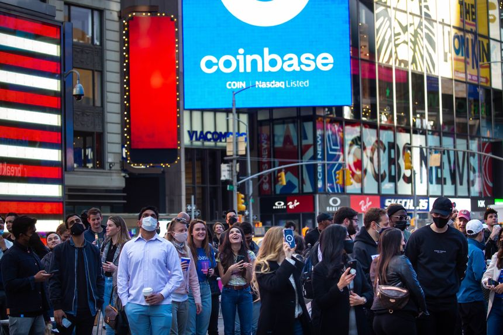

April 20, 2022

Some $1.14 trillion worth of cryptocurrencies were traded by institutional clients on Coinbase in 2021.
Retail traders comprised bitcoin’s market in the early years and traded on exchanges that offered a single bet: buy or sell bitcoin, 24 hours a day, seven days a week. That resulted in a small, erratic market that could be easily moved by modestly sized trades.
“It’s a completely different game now than it was,” said Leah Wald, the chief executive of Valkyrie Funds, which sells crypto-focused exchange-traded funds.
Those retail investors are still there, but they have been joined by hedge funds, registered investment advisers and some companies, said Gil Luria, a strategist at D.A. Davidson who has been studying bitcoin since its early days. Even El Salvador has become a buyer. “They’re all new,” he said.
The growth in professional investors underscores the rapid mainstreaming of cryptocurrencies in recent years. Venture funds invested billions in cryptocurrencies in 2021—and crypto exchanges have amped up their marketing dollars to try to become household names.
A survey of 300 institutional investors conducted by State Street in October found that more than 80% were now allowed to have exposure to cryptocurrencies. Large funds with assets of $500 billion or more under management were the most bullish, and nearly two thirds of them had dedicated staff for the crypto market.
The only major institutional group that wasn’t in the market, State Street found, were sovereign-wealth funds, though it predicted they would be within two years.
‘Cattle, Cowboys and Crypto’: Wyoming Real Estate Opens to Crypto InvestorsPlay video: ‘Cattle, Cowboys and Crypto’: Wyoming Real Estate Opens to Crypto Investors
A group of about 6,000 crypto investors known as CityDAO bought 40 acres of land in Wyoming. WSJ’s Paul Vigna explains how this decentralized autonomous organization, or DAO, came to own this land. Photo illustration: Josephine Chu
Investors in those kinds of financial products comprise a majority of the dollar volume of trading. IntoTheBlock tracks transactions of more than $100,000 as a proxy for these kinds of professional investors and firms. In the fourth quarter of 2021, those transactions represented 99% of total volume traded, the firm said.
Crypto hedge funds have proliferated in response to that demand. There are about 856 operating today with 68 billion in assets under management, according to data from Crypto Fund Research, up from 31 managing less than 1 billion at the end of 2016.
In fact, about the only thing that hasn’t changed is bitcoin’s volatility, said Nicholas Colas, the founder of research firm Data Trek. Usually, as assets grow in size and achieve critical mass, they become less volatile.
“That’s not the case with bitcoin,” he said. “It’s just as volatile now as it was five years ago.”